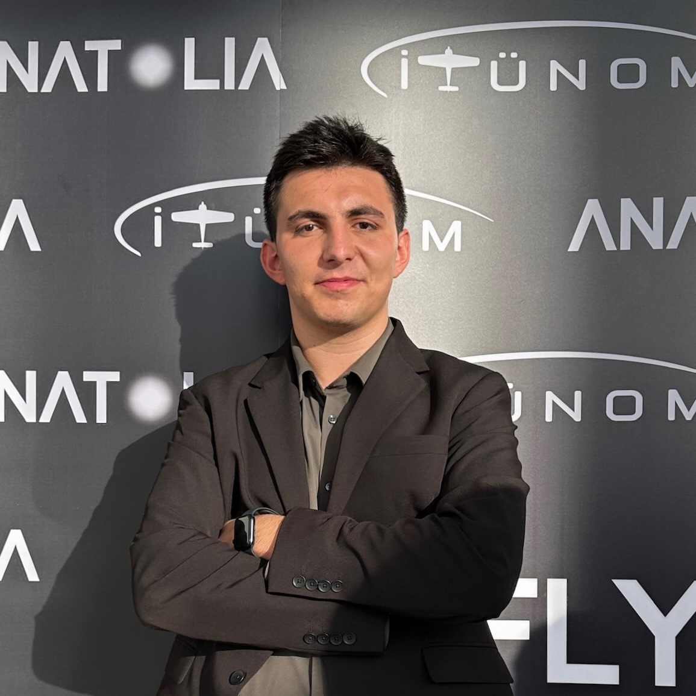

Hasan Taha Bagci
AI & Robotics Researcher
Istanbul Technical University
Department of AI & Data Engineering
I am a senior undergraduate student at Istanbul Technical University, studying Artificial Intelligence and Data Engineering. My research focuses on reinforcement learning, computer vision, and autonomous systems, with a particular emphasis on decision-making for UAVs and robotics.
Currently, I am a Visiting Researcher at Boston University Robotics Lab under Distinguished Prof. John Baillieul, working on diffusion-based visual navigation. I also conduct research at the ITU Aerospace Research Center under Assoc. Prof. Emre Koyuncu on VLM-based scene understanding and drone interception systems.
Previously, I contributed to the MIT McGovern Institute (Senseable Intelligence Group) developing multimodal LLM-driven avatars. I led the ITUNOM UAV Team to a World 1st Place at the Robonation SUAS Competition (2023) and 2nd Place (2024).
news
- Feb 2026 Started a new project on VLM-based Scene Understanding for UAVs at ITU Aerospace Research Center.
- Jan 2025 Received Best of Session Award at ICNS 2025 in Brussels for our paper on GNSS-denied navigation.
- Aug 2025 Joined Boston University Robotics Lab as a Visiting Researcher working with Prof. John Baillieul.
- May 2025 Started contributing to MIT McGovern Institute on multimodal avatar systems.
- Jun 2024 Led the team to World 2nd Place at Robonation SUAS 2024 in Maryland, USA.
- Jun 2023 Won World 1st Place at Robonation SUAS 2023 in Maryland, USA.